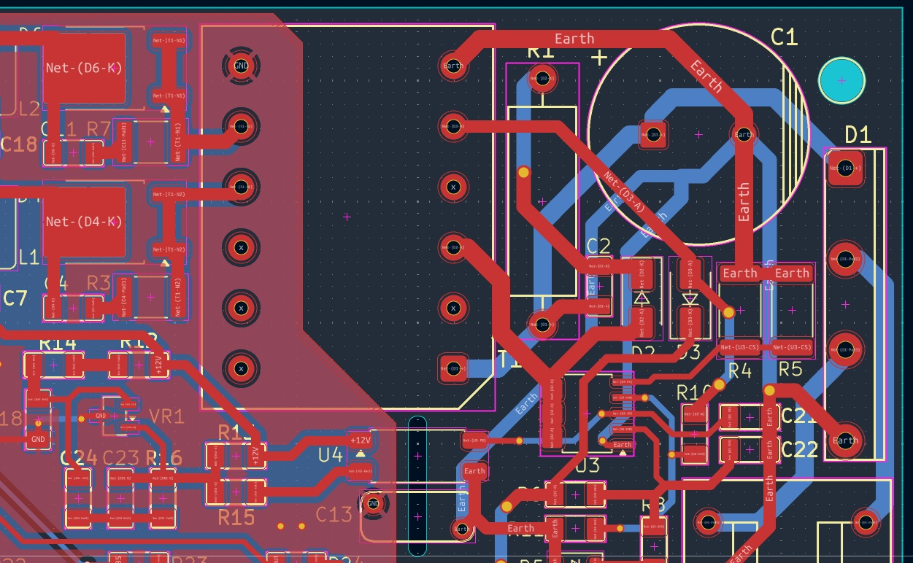
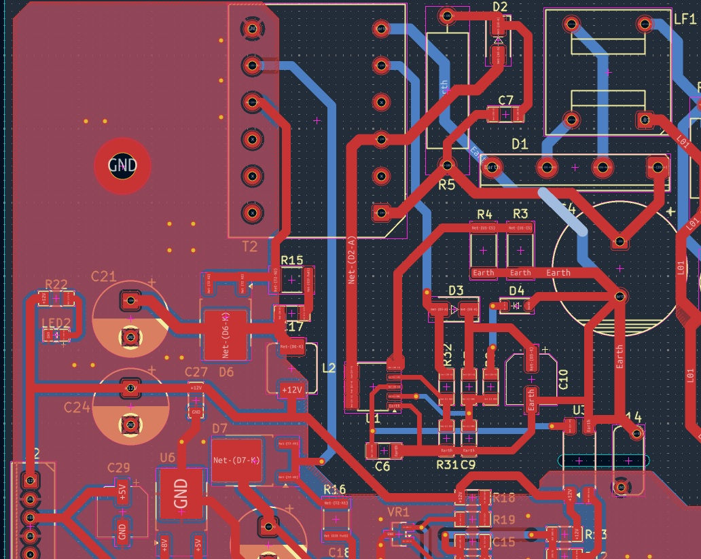

KP22315 간헐 스위칭 아트웍 수정 가이드
정상 아트웍 01과 깜빡임 아트웍 02 비교 — CS·GND·DEM·VDD·Drain 배선 개선
보드명/Revision:
수정일:
담당자:
입력전압: VAC
관찰 증상: VDD 약 7.2V↔11.7V, FB 0V↔5V, 2차 출력 약 2.8V까지 상승 후 하강,
기동 시 약 20개의 고주파 pulse만 발생하고 약 1.5초 간격으로 재시작한다.
우선 판단: 내장 MOSFET은 기동하지만 초기 몇 cycle 후 보호 동작으로 정지한다.
아트웍 02에서는 CS 전류검출의 Kelvin 귀환, U1 GND의 Power GND 공유,
Drain 고 dv/dt 배선과 DEM/CS의 결합을 가장 먼저 개선한다.
1. 비교 대상 아트웍
아트웍 01 — 정상 동작

Controller와 Current sense 주변의 귀환이 상대적으로 밀집되어 있고 제어부 기준점이 짧다.
아트웍 02 — 약 1.5초 간격 깜빡임

R3/R4–U1 간 거리, 공통 Earth 귀환, Drain 인접 제어배선, VDD/DEM loop를 우선 검토한다.
2. 수정 우선순위 요약
| 순위 | 수정 대상 | 핵심 목적 |
|---|
| 1 | R3/R4–CS–U1 GND | CS 0.2V/0.26V 임계값에 영향을 주는 GND bounce와 Drain spike 제거 |
| 2 | U1 pin 1 Star GND | Bridge·Snubber·MOSFET pulse current가 제어용 GND를 통과하지 않게 분리 |
| 3 | Drain/RCD clamp loop | Drain의 고 dv/dt와 turn-off spike를 줄이고 DEM/CS로의 결합 억제 |
| 4 | DEM pin 4와 R31/R32 | 3.0V OVP 오검출 방지, R31 GND를 U1 pin 1로 Kelvin 귀환 |
| 5 | VDD C9/C10 배치 | 스위칭 시작 순간 U1 pin 2의 local VDD dip 방지 |
| 6 | +12V 피드백 귀환 | TL431 ANODE·분압 GND·TLP785 LED 경로의 Ground island/단선 방지 |
3. CS 전류검출과 Star GND 수정
KP22315의 CS 임계값은 약 0.2V, AOCP 영역은 약 0.26V이므로 수십~수백 mV의 패턴 노이즈도 보호 동작을 만들 수 있다.
권장 연결
U1 pin 5 ── 아주 짧게 ── R3/R4 CS측 공통점
│
R3/R4 GND측 공통점 ●──────── U1 pin 1
│
└──────── 굵고 짧게 C4(−)
같은 Star point에 연결:
U1 pin 1 / C9(−) / C10(−) / R31 GND
- □ R3/R4를 U1 pin 5 가까이에 배치한다.
- □ U1 pin 5에서 R3/R4까지의 CS 패턴은 짧고 다른 고전류 패턴과 분리한다.
- □ R3/R4의 GND측은 먼저 서로 합친 뒤 U1 pin 1로 직접 연결한다.
- □ U1 pin 1에서 C4(−)로 별도의 굵은 Power return을 연결한다.
- □ Bridge 충전전류와 Snubber 전류가 U1 pin 1–R3/R4 사이를 통과하지 않게 한다.
- □ CS 아래층 및 인접층에 Drain copper를 배치하지 않는다.
- □ R3/R4 값은 각각 0.47Ω, 병렬 합성 약 0.235Ω을 유지한다.
금지: CS 문제를 숨기기 위해 R3/R4 값을 낮추거나 U1 pin 5를 GND에 직접 연결하지 않는다.
Peak current가 증가하여 U1 내장 MOSFET·T2·2차 정류기를 손상시킬 수 있다.
4. Drain과 RCD clamp 배선 수정
Drain은 가장 큰 고주파 노이즈원이다. 고 dv/dt copper를 작게 유지하고 제어신호에서 물리적으로 분리한다.
최소화할 고전류 loop
C4(+) → T2 primary → U1 Drain → 내부 MOSFET
→ U1 pin 5 → R3/R4 → C4(−)
최소화할 clamp loop
T2/Drain → D2 → C7/R5 → C4(+)
- □ T2 Drain 단자와 U1 Drain pin 6/7/8 사이를 짧고 넓게 연결한다.
- □ D2와 C7을 T2/U1 Drain에 가깝게 배치한다.
- □ Drain 패턴을 FB·DEM·CS·VDD와 평행하게 배선하지 않는다.
- □ FB·DEM·CS 및 U1 아래층에 Drain polygon을 두지 않는다.
- □ Drain copper 면적은 전류·열에 필요한 범위로 제한한다.
- □ RCD clamp의 귀환을 불필요하게 C4 주변으로 길게 우회시키지 않는다.
5. DEM 배선 수정
DEM은 출력 OVP, Brownout, demagnetization 및 valley 검출을 함께 담당하므로 고임피던스·저노이즈 배선이 필요하다.
R32 상단 검출 노드
│
R32
│
●──── 아주 짧게 ──── U1 pin 4 DEM
│
R31
│
└──── 아주 짧게 ──── U1 pin 1
- □ R31/R32 접점을 U1 pin 4 가까이에 배치한다.
- □ R31 하단은 C4(−)로 멀리 보내지 말고 U1 pin 1에 직접 연결한다.
- □ DEM trace를 Drain, D2, D3, T2 primary에서 이격한다.
- □ DEM trace 아래층의 Drain/Power copper를 제거한다.
- □ R32 고전압측과 DEM 저전압측 사이의 충분한 절연거리와 청결을 확보한다.
- □ R31/R32 값으로 보호 임계값을 임의 조정하지 않는다.
6. VDD local decoupling 수정
D3 cathode/C10(+) → R7 → U1 pin 2
U1 pin 2 ── C9 100nF ── U1 pin 1
C10(−) ──────────────── U1 pin 1
- □ C9 100nF를 U1 pin 2와 pin 1 바로 옆에 배치한다.
- □ C9 연결에 via를 사용하지 않거나 최소화한다.
- □ C10(−)를 Power GND로 우회하지 말고 U1 pin 1에 짧게 연결한다.
- □ VDD trace를 Drain과 나란히 배선하지 않는다.
- □ D3–C10–U1 VDD loop를 짧게 유지한다.
7. 제작 전 진단용 Jumper 시험
새 아트웍 제작 전에 기존 02 보드에서 한 단계씩 적용하여 원인을 확인한다. 각 단계 후 전원을 끄고 C4를 방전한 뒤 다음 단계를 진행한다.
| 순서 | Jumper/보강 내용 | 정상화될 때의 판정 |
|---|
| 1 | U1 pin 5 → R3/R4 CS측 공통점 | CS trace·via 문제 |
| 2 | R3/R4 GND측 공통점 → U1 pin 1 | CS Kelvin/GND bounce 문제 |
| 3 | U1 pin 1 → C4(−) | Primary GND return 문제 |
| 4 | U1 pin 2–pin 1에 100nF 직접 추가 | VDD local decoupling 문제 |
| 5 | R31 하단 → U1 pin 1 | DEM GND return 문제 |
| 6 | R31/R32 접점 → U1 pin 4, Drain에서 떨어진 공중배선 | DEM coupling·via 문제 |
Jumper는 기존 저항과 보호경로를 우회하지 않고 동일 net의 패턴만 보강한다.
특히 U1 pin 5는 반드시 R3/R4를 통해 GND로 연결되어야 한다.
8. 수정 후 검증 체크리스트
| 완료 | 검증 항목 | 측정값/메모 |
|---|
| □ | VDD가 약 7V↔12V로 재기동하지 않고 안정적으로 유지 | |
| □ | +12V 출력이 기동 후 정상값까지 상승 | |
| □ | FB가 0V↔5V auto-restart를 반복하지 않고 폐루프 제어 | |
| □ | CS spike가 정상 보드보다 크지 않고 0.2V/0.26V 임계값 확인 | |
| □ | DEM을 DC coupling으로 측정했을 때 3.0V OVP 오검출 없음 | |
| □ | 무부하·최소부하·정격부하에서 정상 기동 | |
| □ | 최저·정격·최고 AC 입력에서 반복 기동 및 출력 확인 | |
| □ | Cold start와 충분히 가열된 상태에서 모두 정상 | |
수정 결과 기록
적용한 변경:
________________________________________________________________________________
________________________________________________________________________________
결과 및 추가 조치:
________________________________________________________________________________
측정 안전: U1 VDD·FB·DEM·CS 및 D3 anode는 모두 1차측 hot 영역이다.
일반 접지형 오실로스코프의 GND 클립을 직접 연결하지 않는다.
1차측과 2차측을 공통 GND 채널로 동시에 측정하면 절연을 단락시킬 수 있다.